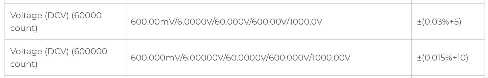

最近，久しぶりにUNI-TのWebサイトに行ってみたんですよね(唐突)
すると，見たことがないテスターがそこにはありました．
そう，UT197です．
UNI-Tといえば最近はマトモな，そして興味を惹かれる製品を作っている印象ですが，今回はなかなかぶっ込んでいました．
UT197，サムネイル画像を見てみると600000カウントなんですよ！
Brymenと(僕が個人的にBrymenから一部OEMを受けていると考えている)三和くらいしか500000カウントを売ってなかったはずです．
となるとその彼らを超えてきたことになります．
そして商品ページには決まり文句のhigh-accuracyという文言が書かれています．
中華テスターはDC基本確度が0.05%と同等かそれ以上に高確度な時にhigh-accuracyと書くことが多いです．
とはいえ600000カウントを舐めちゃいけません．
基本的に50000カウントを超えてくるとDC基本確度は0.05%より良いことが多いのです．
そこで，確度表を見てみます．

何かのバグが起きていませんか？
0.015%って廉価な据え置きDMMくらいの性能じゃないですか…？
参考程度に日本の各社フラッグシップ気の基本確度を載せておきます．